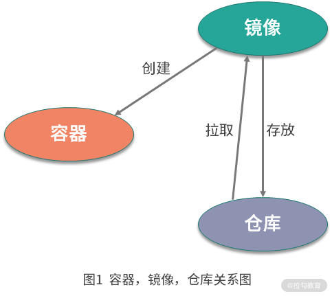
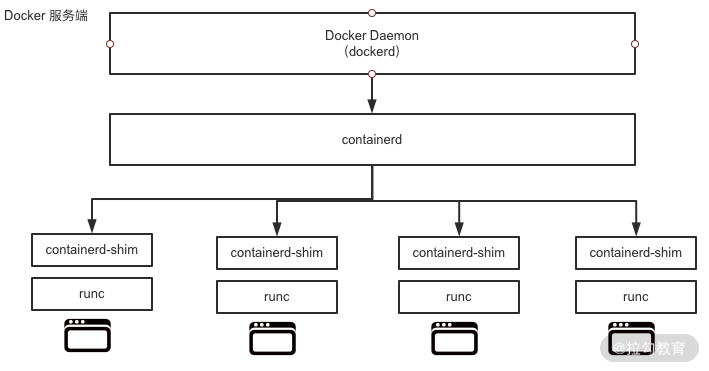

- 00 溯本求源，吃透 Docker！.md.html
- 01 Docker 安装：入门案例带你了解容器技术原理.md.html
- 02 核心概念：镜像、容器、仓库，彻底掌握 Docker 架构核心设计理念.md.html
- 03 镜像使用：Docker 环境下如何配置你的镜像？.md.html
- 04 容器操作：得心应手掌握 Docker 容器基本操作.md.html
- 05 仓库访问：怎样搭建属于你的私有仓库？.md.html
- 06 最佳实践：如何在生产中编写最优 Dockerfile？.md.html
- 07 Docker 安全：基于内核的弱隔离系统如何保障安全性？.md.html
- 08 容器监控：容器监控原理及 cAdvisor 的安装与使用.md.html
- 09 资源隔离：为什么构建容器需要 Namespace ？.md.html
- 10 资源限制：如何通过 Cgroups 机制实现资源限制？.md.html
- 11 组件组成：剖析 Docker 组件作用及其底层工作原理.md.html
- 12 网络模型：剖析 Docker 网络实现及 Libnetwork 底层原理.md.html
- 13 数据存储：剖析 Docker 卷与持久化数据存储的底层原理.md.html
- 14 文件存储驱动：AUFS 文件系统原理及生产环境的最佳配置.md.html
- 15 文件存储驱动：Devicemapper 文件系统原理及生产环境的最佳配置.md.html
- 16 文件存储驱动：OverlayFS 文件系统原理及生产环境的最佳配置.md.html
- 17 原理实践：自己动手使用 Golang 开发 Docker（上）.md.html
- 18 原理实践：自己动手使用 Golang 开发 Docker（下）.md.html
- 19 如何使用 Docker Compose 解决开发环境的依赖？.md.html
- 20 如何在生产环境中使用 Docker Swarm 调度容器？.md.html
- 21 如何使 Docker 和 Kubernetes 结合发挥容器的最大价值？.md.html
- 22 多阶级构建：Docker 下如何实现镜像多阶级构建？.md.html
- 23 DevOps：容器化后如何通过 DevOps 提高协作效能？.md.html
- 24 CICD：容器化后如何实现持续集成与交付？（上）.md.html
- 25 CICD：容器化后如何实现持续集成与交付？（下）.md.html
- 26 结束语 展望未来：Docker 的称霸之路.md.html
02 核心概念：镜像、容器、仓库，彻底掌握 Docker 架构核心设计理念
Docker 的操作围绕镜像、容器、仓库三大核心概念。在学架构设计之前，我们需要先了解 Docker 的三个核心概念。
Docker 核心概念
镜像
镜像是什么呢？通俗地讲，它是一个只读的文件和文件夹组合。它包含了容器运行时所需要的所有基础文件和配置信息，是容器启动的基础。所以你想启动一个容器，那首先必须要有一个镜像。镜像是 Docker 容器启动的先决条件。
如果你想要使用一个镜像，你可以用这两种方式：
- 自己创建镜像。通常情况下，一个镜像是基于一个基础镜像构建的，你可以在基础镜像上添加一些用户自定义的内容。例如你可以基于
centos镜像制作你自己的业务镜像，首先安装nginx服务，然后部署你的应用程序，最后做一些自定义配置，这样一个业务镜像就做好了。 - 从功能镜像仓库拉取别人制作好的镜像。一些常用的软件或者系统都会有官方已经制作好的镜像，例如
nginx、ubuntu、centos、mysql等，你可以到 Docker Hub 搜索并下载它们。
容器
容器是什么呢？容器是 Docker 的另一个核心概念。通俗地讲，容器是镜像的运行实体。镜像是静态的只读文件，而容器带有运行时需要的可写文件层，并且容器中的进程属于运行状态。即容器运行着真正的应用进程。容器有初建、运行、停止、暂停和删除五种状态。
虽然容器的本质是主机上运行的一个进程，但是容器有自己独立的命名空间隔离和资源限制。也就是说，在容器内部，无法看到主机上的进程、环境变量、网络等信息，这是容器与直接运行在主机上进程的本质区别。
仓库
Docker 的镜像仓库类似于代码仓库，用来存储和分发 Docker 镜像。镜像仓库分为公共镜像仓库和私有镜像仓库。
目前，Docker Hub 是 Docker 官方的公开镜像仓库，它不仅有很多应用或者操作系统的官方镜像，还有很多组织或者个人开发的镜像供我们免费存放、下载、研究和使用。除了公开镜像仓库，你也可以构建自己的私有镜像仓库，在第 5 课时，我会带你搭建一个私有的镜像仓库。
镜像、容器、仓库，三者之间的联系

从图 1 可以看到，镜像是容器的基石，容器是由镜像创建的。一个镜像可以创建多个容器，容器是镜像运行的实体。仓库就非常好理解了，就是用来存放和分发镜像的。
了解了 Docker 的三大核心概念，接下来认识下 Docker 的核心架构和一些重要的组件。
Docker 架构
在了解 Docker 架构前，我先说下相关的背景知识——容器的发展史。
容器技术随着 Docker 的出现变得炙手可热，所有公司都在积极拥抱容器技术。此时市场上除了有 Docker 容器，还有很多其他的容器技术，比如 CoreOS 的 rkt、lxc 等。容器技术百花齐放是好事，但也出现了很多问题。比如容器技术的标准到底是什么？容器标准应该由谁来制定？
也许你可能会说， Docker 已经成为了事实标准，把 Docker 作为容器技术的标准不就好了？事实并没有想象的那么简单。因为那时候不仅有容器标准之争，编排技术之争也十分激烈。当时的编排技术有三大主力，分别是 Docker Swarm、Kubernetes 和 Mesos 。Swarm 毋庸置疑，肯定愿意把 Docker 作为唯一的容器运行时，但是 Kubernetes 和 Mesos 就不同意了，因为它们不希望调度的形式过度单一。
在这样的背景下，最终爆发了容器大战，OCI也正是在这样的背景下应运而生。
OCI全称为开放容器标准（Open Container Initiative），它是一个轻量级，开放的治理结构。OCI组织在 Linux 基金会的大力支持下，于 2015 年 6 月份正式注册成立。基金会旨在为用户围绕工业化容器的格式和镜像运行时，制定一个开放的容器标准。目前主要有两个标准文档：容器运行时标准 （runtime spec）和容器镜像标准（image spec）。
正是由于容器的战争，才导致 Docker 不得不在战争中改变一些技术架构。最终形成了下图所示的技术架构。

图2 Docker 架构图
我们可以看到，Docker 整体架构采用 C/S（客户端 / 服务器）模式，主要由客户端和服务端两大部分组成。客户端负责发送操作指令，服务端负责接收和处理指令。客户端和服务端通信有多种方式，即可以在同一台机器上通过UNIX套接字通信，也可以通过网络连接远程通信。
下面我逐一介绍客户端和服务端。
Docker 客户端
Docker 客户端其实是一种泛称。其中 docker 命令是 Docker 用户与 Docker 服务端交互的主要方式。除了使用 docker 命令的方式，还可以使用直接请求 REST API 的方式与 Docker 服务端交互，甚至还可以使用各种语言的 SDK 与 Docker 服务端交互。目前社区维护着 Go、Java、Python、PHP 等数十种语言的 SDK，足以满足你的日常需求。
Docker 服务端
Docker 服务端是 Docker 所有后台服务的统称。其中 dockerd 是一个非常重要的后台管理进程，它负责响应和处理来自 Docker 客户端的请求，然后将客户端的请求转化为 Docker 的具体操作。例如镜像、容器、网络和挂载卷等具体对象的操作和管理。
Docker 从诞生到现在，服务端经历了多次架构重构。起初，服务端的组件是全部集成在 docker 二进制里。但是从 1.11 版本开始， dockerd 已经成了独立的二进制，此时的容器也不是直接由 dockerd 来启动了，而是集成了 containerd、runC 等多个组件。
虽然 Docker 的架构在不停重构，但是各个模块的基本功能和定位并没有变化。它和一般的 C/S 架构系统一样，Docker 服务端模块负责和 Docker 客户端交互，并管理 Docker 的容器、镜像、网络等资源。
Docker 重要组件
下面，我以 Docker 的 18.09.2 版本为例，看下 Docker 都有哪些工具和组件。在 Docker 安装路径下执行 ls 命令可以看到以下与 docker 有关的二进制文件。
-rwxr-xr-x 1 root root 27941976 Dec 12 2019 containerd
-rwxr-xr-x 1 root root 4964704 Dec 12 2019 containerd-shim
-rwxr-xr-x 1 root root 15678392 Dec 12 2019 ctr
-rwxr-xr-x 1 root root 50683148 Dec 12 2019 docker
-rwxr-xr-x 1 root root 764144 Dec 12 2019 docker-init
-rwxr-xr-x 1 root root 2837280 Dec 12 2019 docker-proxy
-rwxr-xr-x 1 root root 54320560 Dec 12 2019 dockerd
-rwxr-xr-x 1 root root 7522464 Dec 12 2019 runc
可以看到，Docker 目前已经有了非常多的组件和工具。这里我不对它们逐一介绍，因为在第 11 课时，我会带你深入剖析每一个组件和工具。
这里我先介绍一下 Docker 的两个至关重要的组件：runC和containerd。
runC是 Docker 官方按照 OCI 容器运行时标准的一个实现。通俗地讲，runC 是一个用来运行容器的轻量级工具，是真正用来运行容器的。containerd是 Docker 服务端的一个核心组件，它是从dockerd中剥离出来的 ，它的诞生完全遵循 OCI 标准，是容器标准化后的产物。containerd通过 containerd-shim 启动并管理 runC，可以说containerd真正管理了容器的生命周期。

图3 Docker 服务端组件调用关系图
通过上图，可以看到，dockerd通过 gRPC 与containerd通信，由于dockerd与真正的容器运行时，runC中间有了containerd这一 OCI 标准层，使得dockerd可以确保接口向下兼容。
gRPC 是一种远程服务调用。想了解更多信息可以参考https://grpc.io containerd-shim 的意思是垫片，类似于拧螺丝时夹在螺丝和螺母之间的垫片。containerd-shim 的主要作用是将 containerd 和真正的容器进程解耦，使用 containerd-shim 作为容器进程的父进程，从而实现重启 containerd 不影响已经启动的容器进程。
了解了 dockerd，containerd 和 runC 之间的关系，下面可以通过启动一个 Docker 容器，来验证它们进程之间的关系。
Docker 各组件之间的关系
首先通过以下命令来启动一个 busybox 容器：
$ docker run -d busybox sleep 3600
容器启动后，通过以下命令查看一下 dockerd 的 PID：
$ sudo ps aux |grep dockerd
root 4147 0.3 0.2 1447892 83236 ? Ssl Jul09 245:59 /usr/bin/dockerd
通过上面的输出结果可以得知 dockerd 的 PID 为 4147。为了验证图 3 中 Docker 各组件之间的调用关系，下面使用 pstree 命令查看一下进程父子关系：
$ sudo pstree -l -a -A 4147
dockerd
|-containerd --config /var/run/docker/containerd/containerd.toml --log-level info
| |-containerd-shim -namespace moby -workdir /var/lib/docker/containerd/daemon/io.containerd.runtime.v1.linux/moby/d14d20507073e5743e607efd616571c834f1a914f903db6279b8de4b5ba3a45a -address /var/run/docker/containerd/containerd.sock -containerd-binary /usr/bin/containerd -runtime-root /var/run/docker/runtime-runc
| | |-sleep 3600
事实上，dockerd 启动的时候， containerd 就随之启动了，dockerd 与 containerd 一直存在。当执行 docker run 命令（通过 busybox 镜像创建并启动容器）时，containerd 会创建 containerd-shim 充当 “垫片” 进程，然后启动容器的真正进程 sleep 3600 。这个过程和架构图是完全一致的。
结语
本课时有基础有架构，是一篇为后续打基础的文章。如果你有什么知识点没理解到位，有疑问，可写在留言处，我回复置顶，给他人参考。
如果你理解到位，相信你对 Docker 的三大核心概念镜像、容器、仓库有了一个清楚的认识，并对 Dokcer 的架构有了一定的了解。那么你知道为什么 Docker 公司要把containerd拆分并捐献给社区吗？思考后，也可以把你的想法写在留言区。